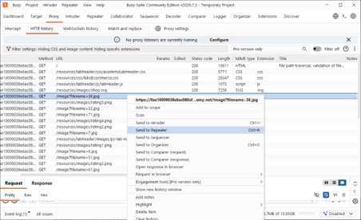
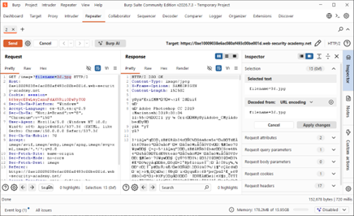
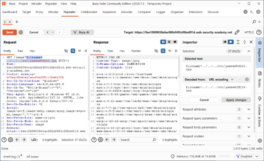
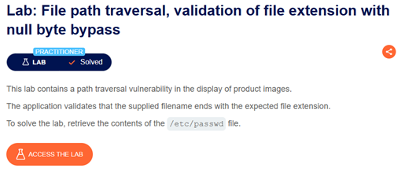

Ficha Técnica
Actividad 12: Lab: File path traversal, validation of file extension with null byte bypass
Laboratorio centrado en la evasión de validación de extensiones de archivo mediante la inyección de un Byte Nulo (%00), explotando el comportamiento de terminación de cadenas en APIs nativas escritas en C/C++[cite: 15].
Dificultad: Practitioner[cite: 15]
Vulnerabilidad: CWE-22 (Path Traversal) & CWE-626 (Null Byte Injection)[cite: 15]
Evadir el filtro de la aplicación agregando la extensión requerida al final del payload, separándola de la ruta maliciosa utilizando un byte nulo (%00) para truncar la cadena a nivel de sistema operativo y recuperar /etc/passwd[cite: 15].
Marco Teórico
Fundamentación de la Vulnerabilidad
Esta vulnerabilidad combina Path Traversal con una debilidad clásica de manejo de cadenas conocida como inyección de Byte Nulo. Ocurre cuando componentes de software de alto nivel interactúan con funciones nativas del sistema operativo escritas en C/C++[cite: 15].
En los lenguajes basados en C, las cadenas no tienen longitud predefinida; usan un carácter de terminación explícito (el byte nulo, NUL o %00). Al encontrarlo, el sistema asume inmediatamente que la cadena ha terminado, descartando cualquier texto a su derecha[cite: 15].
La Capa de Validación (Alto Nivel) lee toda la cadena y confirma que termina en .jpg. Sin embargo, en la Capa de Ejecución (Bajo Nivel), el kernel del SO encuentra el %00, ignora la extensión .jpg y abre únicamente el archivo inyectado antes del byte nulo[cite: 15].
Procedimiento
Fase 1: Interceptación e Identificación del Parámetro
Tras inicializar el entorno y capturar el tráfico en Burp Suite, se localizó la petición GET responsable de solicitar los recursos gráficos: GET /image?filename=36.jpg. La petición fue derivada al módulo Repeater para su análisis[cite: 15].

>_ Evidencia 04: Identificación de la solicitud GET hacia filename=36.jpg y su derivación al entorno Repeater[cite: 15].
Fase 2: Comprobación del Comportamiento Base
En Repeater, se corroboró que la petición inalterada con la extensión legítima devuelve un HTTP 200 OK. El envío del payload directo (../../etc/passwd) resulta en error por carecer de la extensión autorizada[cite: 15].

>_ Evidencia 05: Petición original mostrando el comportamiento validado de la aplicación al recibir la extensión esperada[cite: 15].
Fase 3: Inyección del Null Byte y Exfiltración
Se construyó el payload combinando el salto de directorio, el objetivo, el truncador y la falsa extensión: filename=../etc/passwd%0036.jpg. El filtro aprobó el final del string, pero a nivel de sistema, el byte %00 truncó la cadena, devolviendo los usuarios del sistema[cite: 15].

>_ Evidencia 06: Ataque exitoso en Repeater mostrando el payload de Byte Nulo (%00) evadiendo la validación y revelando /etc/passwd[cite: 15].
Fase 4: Verificación de Compromiso
La plataforma PortSwigger validó la correcta ejecución de la inyección de Byte Nulo, cambiando el estado a resuelto[cite: 15].

>_ Evidencia 07: Confirmación visual del estado "Lab Solved", ratificando la resolución de la vulnerabilidad[cite: 15].
Análisis Téc.
Mecánica del Payload de Evasión
GET /image?filename=../../../etc/passwd%0036.jpg HTTP/2
Host: 0ae10009038e6a...web-security-academy.net
Accept: image/webp, image/apng, image/*
Sec-Fetch-Site: same-originDefensa en Profundidad y Remediación
Mantener actualizados los frameworks, los lenguajes de programación del backend y el kernel del SO. Las versiones modernas implementan protección intrínseca contra este vector, arrojando excepciones si detectan un byte nulo en la ruta de un archivo[cite: 15].
No se debe confiar en la validación del final de una cadena (endsWith). Se deben usar expresiones regulares que restrinjan el contenido a caracteres estrictamente alfanuméricos, bloqueando la inyección de secuencias no imprimibles como %00 o caracteres de navegación[cite: 15].
La aplicación debe procesar la entrada mediante una función nativa de extracción que ignore las rutas, como basename(). Esto garantiza que la aplicación solo operará sobre la última porción de la cadena, neutralizando el recorrido por el sistema de archivos[cite: 15].